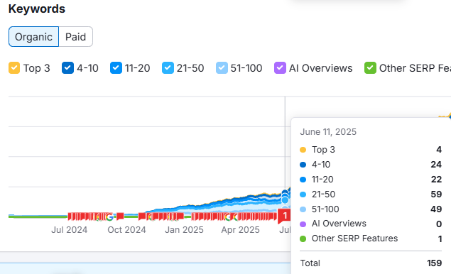
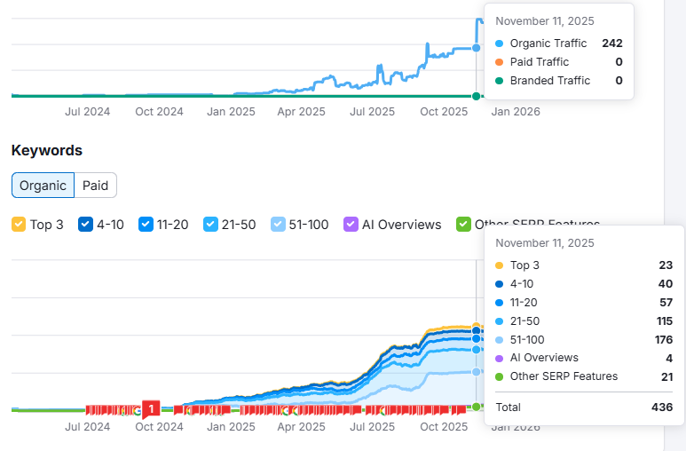
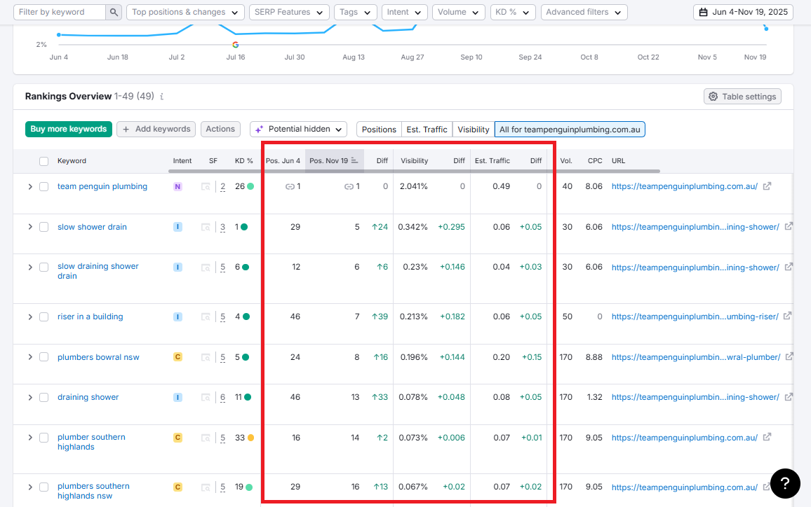

Scaling Organic Traffic
for Team Penguin Plumbing

TL;DR
Team Penguin Plumbing grew organic traffic from 56 → 242 (+332%) by implementing a local SEO strategy focused on keyword optimization, content expansion, and technical improvements. Keyword rankings surged (Top 3:4 → 23), visibility jumped to 11.25% (+8.26) and total keyword coverage nearly tripled—resulting in stronger local dominance and consistent lead generation.
Organic Traffic Growth
| Period | Organic Traffic | Change |
|---|---|---|
| June 2025 | 56 | — |
| November 2025 | 242 | +186 (+332%) |
Overview
Team Penguin Plumbing a local service business in New South Wales, Australia, aimed to increase its online visibility, grow organic traffic, and dominate local search results in a highly competitive plumbing market.
The Challenge
Despite having a functioning website, the business struggled to generate consistent organic traffic and keyword visibility.
Core Challenges
- Low Organic Traffic
- Poor Keyword Distribution
- Weak Search Visibility
- Under-Optimized Local SEO
- Limited SERP Feature Presence

The Solution
A structured, local-focused SEO strategy was implemented to improve rankings, traffic, and overall search presence.
- Local Keyword Strategy: I conducted in-depth keyword research to identify high-intent, location-based search terms aligned with plumbing services in NSW. I prioritized keywords with strong conversion potential and realistic ranking opportunities.
- On-Page SEO Optimization: I systematically optimized core pages by refining title tags, meta descriptions, headers, and on-page content to align with target keywords. This strengthened relevance signals and improved rankings for priority queries.
- Content Expansion: I developed and enhanced service and location-specific pages to capture broader keyword variations and long-tail searches. I structured the content to match user intent while building topical authority in the plumbing niche.
- Technical SEO Improvements: I audited and resolved technical issues affecting crawlability, indexing, and site performance. I also improved mobile usability and page speed to enhance both user experience and search engine access.
- SERP Feature Optimization: I restructured content to increase eligibility for featured snippets and other SERP features, including implementing structured data. This expanded visibility beyond standard organic rankings.
- Continuous Tracking & Iteration: I continuously monitored keyword rankings, traffic trends, and visibility metrics to guide ongoing optimizations. I refined the strategy based on performance data to sustain growth and secure top positions.
The Results
The campaign delivered significant growth across all key SEO metrics:

Keyword Ranking Improvements
Multiple high-intent keywords reached 1st page on Google in just 5 months.

Visibility Growth
- Overall SEO visibility increased to 11.25% (+8.26 growth) for less than 6 months.
- SERP Features Growth Before optimization: 1 SERP feature, After optimization: 21 SERP features
Traffic Uplift
Estimated traffic saw noticeable gains:
- Some keywords increased traffic contribution by +1.35 to +1.88
- Improved rankings directly translated into higher click-through rates.
The Outcome
The SEO campaign transformed Team Penguin Plumbing’s digital presence:
Key Wins
- 🚀 332% increase in organic traffic
- 📈 Massive growth in keyword coverage (+277 keywords)
- 🥇 Strong increase in Top 3 rankings (4 → 23)
- 📊 Visibility more than tripled (3% → 11.25%)
- 🔍 Expanded presence in SERP features